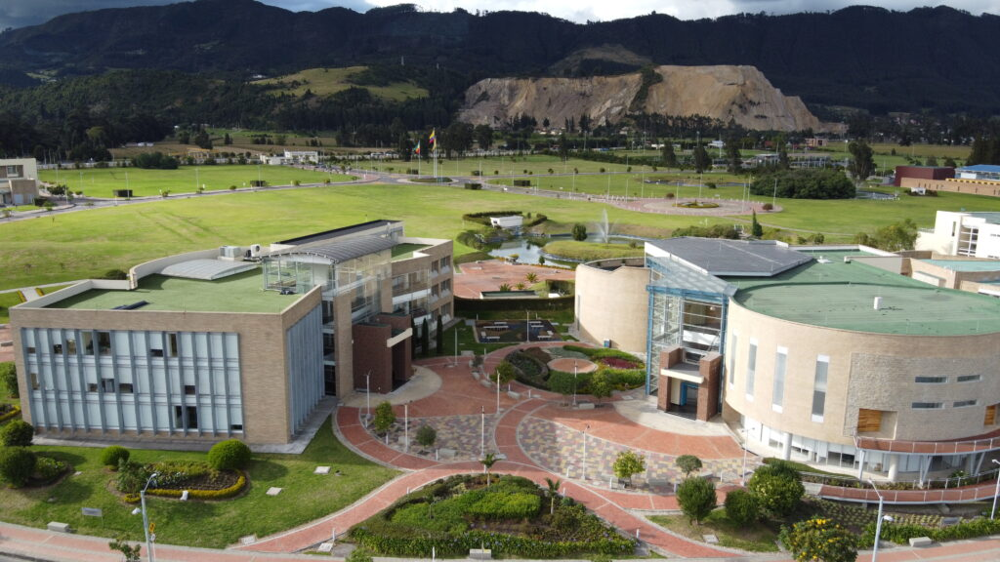
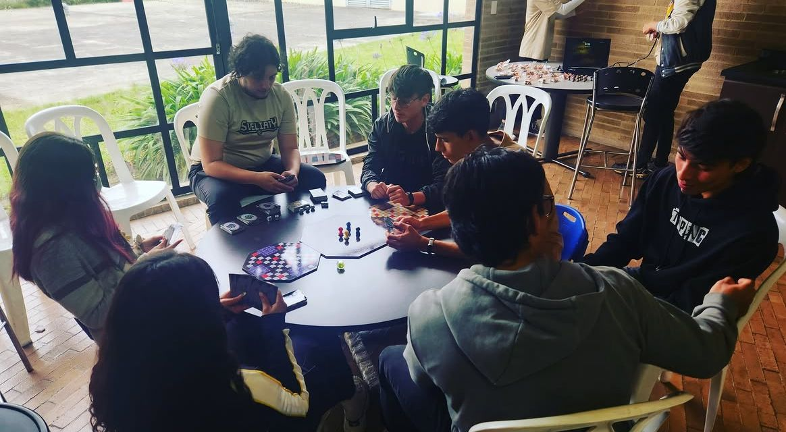
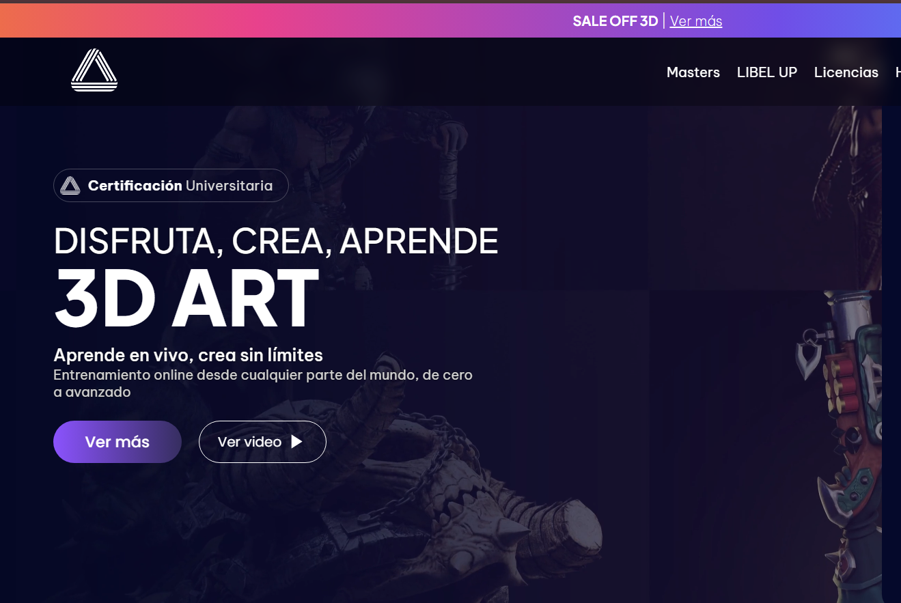

Primero empecé mi carrera de Ingeniería en Multimedia en la Universidad Militar Nueva Granada en el año 2022, durante la primera mitad del año.

Soy Sara, una creadora apasionada por el diseño digital, el modelado 3D y el desarrollo de experiencias interactivas. Disfruto transformar ideas en proyectos visuales que combinan creatividad, narrativa y tecnología. Actualmente continúo explorando nuevas herramientas y técnicas que me permitan ampliar mis conocimientos y desarrollar proyectos cada vez más completos, tanto en el ámbito artístico como en el tecnológico.
En este espacio presento parte de mi recorrido, mis habilidades y algunos proyectos que reflejan mi estilo personal.

Primero empecé mi carrera de Ingeniería en Multimedia en la Universidad Militar Nueva Granada en el año 2022, durante la primera mitad del año.

Durante mi proceso de aprendizaje en la UMNG, participé en diferentes proyectos académicos, desde piezas 2D y modelos 3D hasta experiencias pensadas para realidad virtual.

En el año 2026 empecé un máster en animación 3D en Libel Academy, fortaleciendo mis habilidades en Blender, modelado, animación y composición visual.
A lo largo de mi formación he trabajado con diferentes herramientas orientadas al diseño, la creación de contenido digital y el desarrollo interactivo. Estas tecnologías me permiten abordar proyectos desde distintas perspectivas y adaptarme a nuevos desafíos creativos.